<title>Textos largos</title>
<meta name="claude:viewport-fit-sides" content="cover">
<link rel="preconnect" href="https://fonts.googleapis.com">
<link rel="preconnect" href="https://fonts.gstatic.com" crossorigin>
<link rel="stylesheet" href="https://fonts.googleapis.com/css2?family=EB+Garamond:ital,wght@0,400;0,500;1,400&family=Inter+Tight:wght@400;500;600&display=swap">
<style>
/* Una columna de papel y tinta, como las páginas «Montado». Terracota = lo de hoy; oliva = lo arreglado o lo recomendado. */
:root{
  --paper:#F2EDE0;--card:#FBF8F1;
  --ink:#1F1C17;--ink-2:#4A453C;--ink-3:#77705F;
  --line:#C9C0A8;
  --olive:#3E5A3A;--olive-soft:rgba(62,90,58,.12);
  --terra:#A85E43;--terra-soft:rgba(168,94,67,.12);
  --display:'EB Garamond',Georgia,'Times New Roman',serif;
  --ui:'Inter Tight',system-ui,-apple-system,'Segoe UI',sans-serif;
}
@media (prefers-color-scheme: dark){:root:not([data-theme="light"]){
  --paper:#1d1a14;--card:#2c271f;--ink:#EDE5D3;--ink-2:#c0b49e;--ink-3:#B2A995;--line:#4d4536;
  --olive:#98B58B;--olive-soft:rgba(122,154,109,.16);--terra:#E8A98F;--terra-soft:rgba(232,169,143,.14);color-scheme:dark;
}}
:root[data-theme="dark"]{
  --paper:#1d1a14;--card:#2c271f;--ink:#EDE5D3;--ink-2:#c0b49e;--ink-3:#B2A995;--line:#4d4536;
  --olive:#98B58B;--olive-soft:rgba(122,154,109,.16);--terra:#E8A98F;--terra-soft:rgba(232,169,143,.14);color-scheme:dark;
}
*{box-sizing:border-box}
body{margin:0;background:var(--paper);color:var(--ink);font-family:var(--ui);font-size:16px;line-height:1.55;-webkit-text-size-adjust:100%}
main{max-width:1160px;margin:0 auto;padding-left:max(16px,env(safe-area-inset-left,0px));padding-right:max(16px,env(safe-area-inset-right,0px));padding-block:40px 72px}
h1,h2,h3{font-family:var(--display);font-style:italic;font-weight:400;line-height:1.15;margin:0;text-wrap:balance}
h1{font-size:clamp(32px,6vw,44px)}
h2{font-size:clamp(23px,4vw,28px);margin:44px 0 10px;padding-top:22px;border-top:1px solid var(--line)}
h3{font-size:21px;margin:22px 0 8px}
p{margin:0 0 12px;color:var(--ink-2);max-width:68ch}
strong{color:var(--ink);font-weight:500}
code{font-size:.88em;background:var(--card);border:1px solid var(--line);border-radius:4px;padding:0 4px;overflow-wrap:anywhere}
.eyebrow{font-size:12px;letter-spacing:.14em;text-transform:uppercase;color:var(--ink-3);margin-bottom:10px}
.lead{font-family:var(--display);font-size:21px;color:var(--ink);max-width:62ch;margin-top:14px}
.nota{font-size:13px;color:var(--ink-3)}
.montado{background:var(--olive-soft);border-radius:10px;padding:12px 16px;margin:18px 0 0;color:var(--ink);max-width:68ch}
.tabla{overflow-x:auto;margin:14px 0;border:1px solid var(--line);border-radius:10px;background:var(--card)}
table{border-collapse:collapse;width:100%;min-width:640px;font-size:14px}
th,td{text-align:left;vertical-align:top;padding:9px 12px;border-bottom:1px solid var(--line)}
th{font-size:11px;letter-spacing:.12em;text-transform:uppercase;color:var(--ink-3);font-weight:500}
tr:last-child td{border-bottom:0}
td.px{white-space:nowrap;font-variant-numeric:tabular-nums}
.chip{display:inline-block;font-size:12px;border-radius:999px;padding:1px 9px;white-space:nowrap}
.ya{background:var(--terra-soft);color:var(--terra)}
.largo{background:var(--olive-soft);color:var(--ink-2)}
.hecho{background:var(--olive-soft);color:var(--olive)}
/* Las fotos son recortes del móvil a 360 px, a su tamaño: tres por fila cuando caben, una debajo de otra si no. */
.par{display:grid;gap:18px;grid-template-columns:repeat(auto-fill,minmax(min(100%,300px),360px));margin:16px 0}
.lado{min-width:0}
.lado .t{font-size:12px;letter-spacing:.12em;text-transform:uppercase;margin-bottom:6px;color:var(--ink-3);min-height:2.9em}
.hoy .t{color:var(--terra)}.luego .t{color:var(--olive)}
figure{margin:0}
figure img{display:block;width:100%;max-width:360px;height:auto;border:1px solid var(--line);border-radius:6px;background:var(--card)}
figcaption{font-size:13px;color:var(--ink-3);margin-top:6px}
.sola{max-width:300px;margin:14px 0}
.pregunta{border-left:3px solid var(--terra);padding:4px 0 4px 14px;margin:22px 0}
.pregunta p{margin-bottom:6px}
.rec{color:var(--olive)}
ul{margin:0 0 12px;padding-left:20px;color:var(--ink-2);max-width:68ch}
li{margin-bottom:6px}
</style>

<main>
  <div class="eyebrow">PACE · antes de que los testers vean PACE en inglés · 17 nov. 2026</div>
  <h1>Textos largos</h1>
  <p class="lead">Una prueba que alarga cada texto de PACE un 30 % para ver qué se rompe antes de que lo vea nadie. En inglés y en castellano de verdad salen dos cosas, que piden tu letra; con los textos más largos, cuatro más, y una ya está arreglada.</p>
  <p>Nada de esto cambia lo que ves hoy: el arreglo montado solo actúa cuando un texto no cabe, y en castellano y en inglés cabe.</p>

  <h2>Cómo se ha mirado</h2>
  <p>La prueba se inventa un idioma: cada texto de PACE, en el más largo de sus dos idiomas, con acentos en las vocales, alguna doblada y entre <strong>⟦ ⟧</strong>. «Empezar foco» sale «⟦Émpéézáár fóócó⟧». Así se ve qué se corta y, de paso, qué texto no pasa por las traducciones: el que sale sin las marcas se quedaría en castellano con PACE en inglés.</p>
  <p>Recorre 17 pantallas (la home con y sin jornada, la tarjeta del día, la ventana de la pausa, el runner de Mueve y Estira, Respira, Ajustes y «Tus datos», el sobre, las tres bibliotecas, logros, estadísticas, la hoja de compra y la bienvenida) a 360 × 640, 360 × 740 y 1280 × 800, y las mira tres veces: con los textos largos, en inglés y en castellano. En cada una busca texto cortado sin puntos suspensivos, textos que se pisan o se tapan, filas que se salen de su caja, botones que salen de la ventana, scroll donde no debe haberlo (la home, Ajustes, «Tus datos») y scroll de lado.</p>
  <figure class="sola">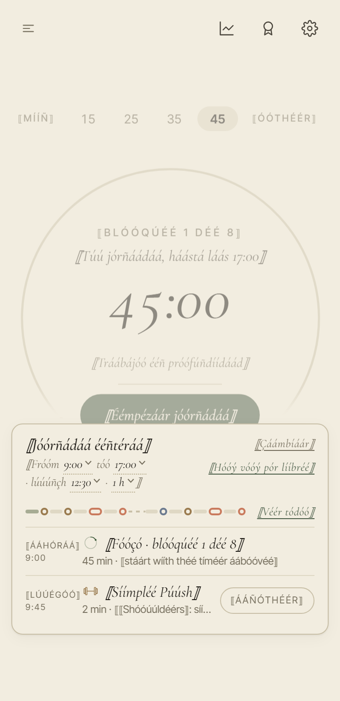<figcaption>La home con la jornada, con los textos largos, a 360 × 740: cabe entera</figcaption></figure>
  <p class="nota">Ese idioma no llega nunca a la app: vive en las pruebas, y <code>npm run verify</code> falla si asoma en lo que se publica.</p>

  <h2>Lo hallado</h2>
  <div class="tabla"><table>
    <thead><tr><th>Pantalla</th><th>Tamaño</th><th>Qué texto</th><th>Cuánto</th><th>¿Pasa ya?</th></tr></thead>
    <tbody>
      <tr><td>Ajustes, en un móvil que vibra y con los avisos bloqueados</td><td>360 × 640</td><td>Todo el panel: «Vibrar» y la línea «El navegador tiene las notificaciones bloqueadas…»</td><td class="px">12 px de scroll</td><td><span class="chip ya">Sí, en los dos idiomas</span> · pregunta 1</td></tr>
      <tr><td>Ventana de la pausa, por libre</td><td>360 de ancho</td><td>«Hidrátate · Respira · Muévete»</td><td class="px">5 px fuera de su caja</td><td><span class="chip ya">Sí, en castellano</span> · pregunta 2</td></tr>
      <tr><td>Ventana de la pausa, por libre</td><td>360 de ancho</td><td>La misma fila</td><td class="px">47 px fuera; la ventana se mueve 23 px de lado</td><td><span class="chip largo">Solo más largo</span> · pregunta 2</td></tr>
      <tr><td>Estadísticas</td><td>360 de ancho</td><td>Las pestañas «Hoy · Semana · Mes · Año · Qué te ayuda»</td><td class="px">La hoja se movía 87 px de lado</td><td><span class="chip hecho">Arreglado</span></td></tr>
      <tr><td>La tarjeta del día (la pregunta)</td><td>360 × 640</td><td>«¿Cuánto trabajas hoy?» con sus horas y sus cuatro respuestas</td><td class="px">28 px de scroll en la home</td><td><span class="chip largo">Solo más largo</span></td></tr>
      <tr><td>Ajustes</td><td>360 × 640 · 360 × 740 · 1280 × 800</td><td>Todo el panel</td><td class="px">200 · 100 · 15 px de scroll</td><td><span class="chip largo">Solo más largo</span></td></tr>
      <tr><td>Todas</td><td>Los tres</td><td>Textos sin traducir</td><td class="px">Ninguno</td><td><span class="chip hecho">Bien</span></td></tr>
    </tbody>
  </table></div>
  <p>Lo demás cabe en los tres tamaños y de las tres maneras: la home por libre y con la jornada, el runner de Mueve y Estira, Respira, el sobre, las bibliotecas, logros, la hoja de compra y la bienvenida.</p>
  <p class="nota">Lo que sale sin las marcas y está bien: las fechas, que las escribe el navegador ya en el idioma de la app («9 Nov»); «ES» y «EN» en la bienvenida; y las novedades del sobre, que se escriben a mano en los dos idiomas.</p>

  <h2>Arreglado: las pestañas de Estadísticas</h2>
  <p>Con un texto más largo, las cinco pestañas no podían encoger y empujaban la hoja entera hacia un lado: se podía arrastrar 87 px. Ahora, si un día no caben, encogen con puntos suspensivos, como ya hacen otros textos de PACE.</p>
  <div class="par">
    <div class="lado hoy"><div class="t">Antes, con textos largos</div><figure>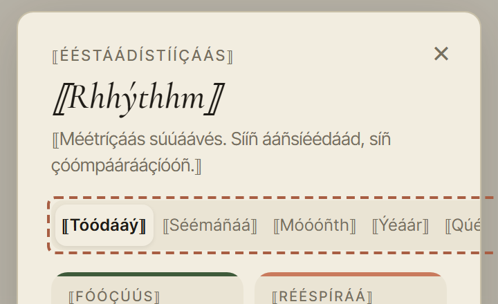</figure><figcaption>El recuadro: las pestañas se salen de la hoja, que se puede arrastrar 87 px de lado.</figcaption></div>
    <div class="lado luego"><div class="t">Con el arreglo</div><figure>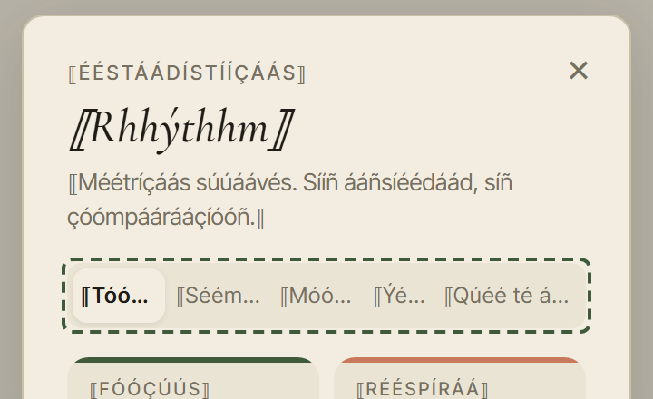</figure><figcaption>Caben, con puntos suspensivos.</figcaption></div>
  </div>
  <p class="nota">En castellano y en inglés no cambia nada: a 360 de ancho les sobran 41 px.</p>
  <h2>1 · Ajustes pide 12 px en el móvil</h2>
  <p>«Vibrar» (nuevo en la 0.208.0) solo sale en un móvil que puede vibrar, y la línea «El navegador tiene las notificaciones bloqueadas para este sitio» solo cuando los avisos de PACE están bloqueados. Cada una por separado cabe; las dos a la vez, a 360 × 640, piden 12 px de scroll, en castellano y en inglés. En la app de Android la frase es más larga («Los avisos de PACE están desactivados en los ajustes de Android»), así que ahí seguramente piden más.</p>
  <div class="par">
    <div class="lado hoy"><div class="t">Hoy · 12 px de scroll</div><figure>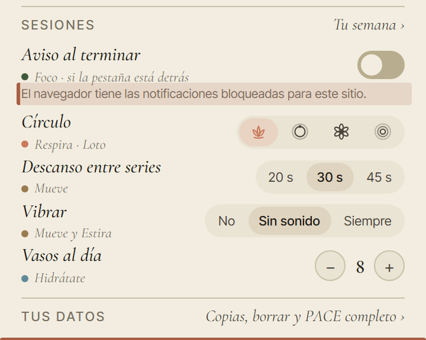</figure><figcaption>El sombreado: la línea de más. La raya de abajo es el borde de la pantalla: el panel pide 12 px más.</figcaption></div>
    <div class="lado luego"><div class="t">A · la nota en la línea pequeña <span class="rec">(recomendada)</span></div><figure>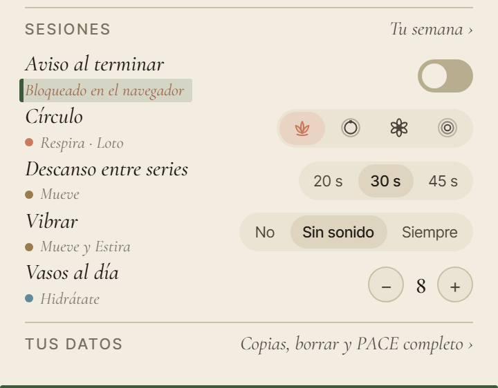</figure><figcaption>El sombreado: la nota, ya en la línea pequeña. Cabe, sin scroll.</figcaption></div>
    <div class="lado"><div class="t">B · las filas más juntas en pantallas bajas</div><figure>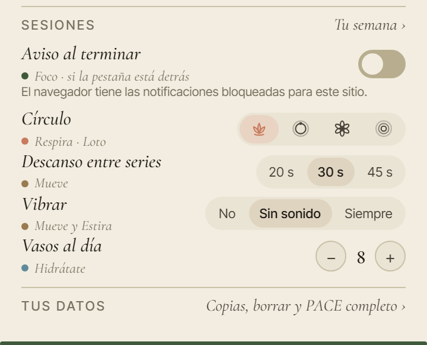</figure><figcaption>Cada fila, 3 px más junta. Cabe, sin scroll.</figcaption></div>
  </div>
  <p><strong>A</strong>: la nota deja de tener línea propia y va en la línea pequeña de «Aviso al terminar», en terracota: «Bloqueado en el navegador» (en las apps, «Desactivado en Android» o «en el iPhone»). Es lo mismo que se hizo con «La música, solo en Respira» (9 nov.): en Ajustes, nada nuevo añade alto. <strong>B</strong>: con la pantalla baja, cada fila de Ajustes 3 px más junta; cabe, pero se aprieta todo el panel por una línea que casi nadie verá.</p>

  <h2>2 · «Hidrátate · Respira · Muévete» en la pausa</h2>
  <p>Las otras tres puertas de la pausa van en una línea (tu B del 9 oct.). En castellano, a 360 de ancho, miden 291 px en una caja de 286: «Muévete» se mete 5 px en el margen de la ventana y la fila ya no queda centrada. En un móvil de 320 (por debajo de lo que se mide) son 25 px, y la ventana se puede mover un poco de lado; con un texto más largo, 23 px de lado.</p>
  <div class="par">
    <div class="lado hoy"><div class="t">Hoy · 5 px fuera</div><figure>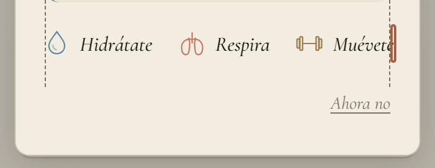</figure><figcaption>Las rayas son los bordes de la caja de la fila: «Muévete» pasa 5 px (en terracota).</figcaption></div>
    <div class="lado luego"><div class="t">A · menos hueco entre las tres <span class="rec">(recomendada)</span></div><figure>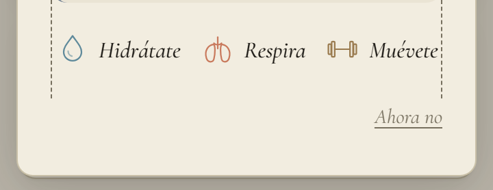</figure><figcaption>Cabe centrada: le sobran 7 px en castellano y 29 en inglés.</figcaption></div>
    <div class="lado"><div class="t">B · dos líneas si no caben</div><figure>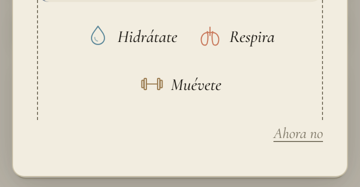</figure><figcaption>En castellano, a 360, ya sale en dos líneas.</figcaption></div>
  </div>
  <p><strong>A</strong>: en el móvil, el hueco entre las tres baja de 16 a 10 px. Sigue en una línea, del mismo tamaño, y cabe centrada. <strong>B</strong>: si no caben, parten en dos líneas; en castellano, a 360, ya saldrían en dos, con «Muévete» debajo.</p>

  <h2>Solo con un texto más largo</h2>
  <p>No pide nada hoy; queda vigilado por la prueba, que se pone en rojo si crece.</p>
  <div class="par">
    <div class="lado"><div class="t">La pregunta del día · 28 px</div><figure>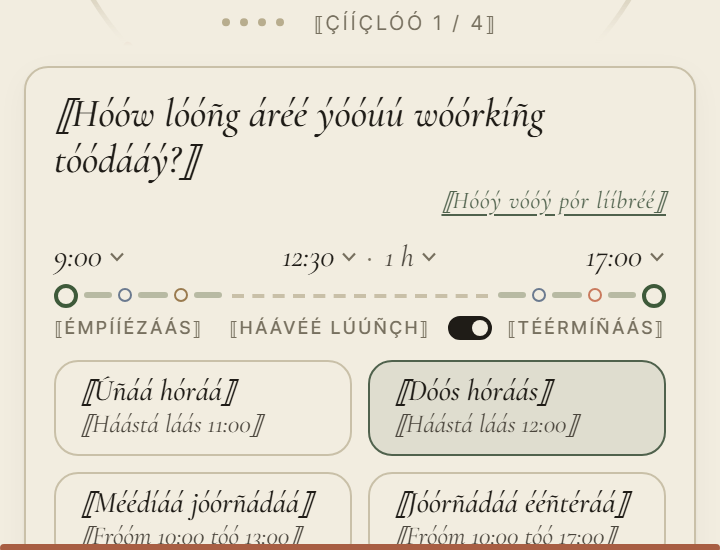</figure><figcaption>La raya de abajo es el borde de la pantalla: la home pide 28 px más.</figcaption></div>
    <div class="lado"><div class="t">Ajustes · 200 px</div><figure>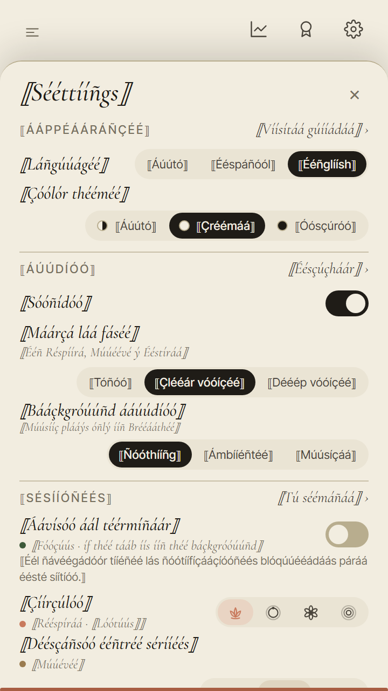</figure><figcaption>La raya de abajo es el borde de la pantalla: pide 200 px más.</figcaption></div>
    <div class="lado"><div class="t">La pausa · 23 px de lado</div><figure>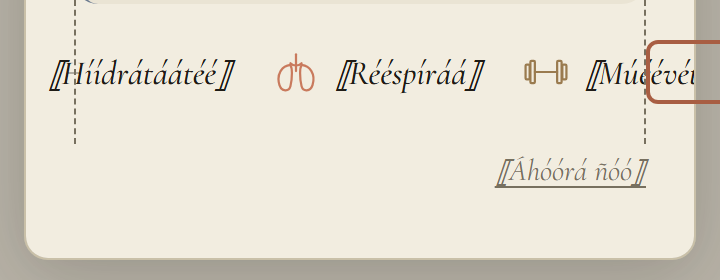</figure><figcaption>«Muévete» se sale 47 px de su caja y la ventana se mueve 23 px de lado.</figcaption></div>
  </div>
  <ul>
    <li><strong>La tarjeta del día</strong> (la pregunta), a 360 × 640: la home pediría 28 px. En inglés, con la letra del móvil al 115 %, ya se sabía que pide 17. Esa tarjeta la está pensando la rama del calendario: no la toco.</li>
    <li><strong>Ajustes</strong> va justo ya en castellano: con un idioma un 30 % más largo pediría 200 px a 360 × 640. Si algún día llega otro idioma, habrá que pensarlo en dos pantallas.</li>
    <li><strong>La fila de la pausa</strong>, la de la pregunta 2: con la A le sobran 7 px en castellano; con un texto un 30 % más largo seguiría sin caber, y solo la B lo aguanta.</li>
  </ul>

  <div class="pregunta">
    <h3>¿Qué letra?</h3>
    <p>Pregunta 1 (Ajustes): A o B. Pregunta 2 (la pausa): A o B. <span class="rec">Recomendadas: 1A y 2A.</span></p>
    <p class="nota">Montado y subido en la rama <code>claude/textos-largos-17nov-5fb6a3</code>: la prueba (45 pruebas nuevas, con el idioma largo solo en las pruebas y vigilado por <code>verify</code>) y el arreglo de Estadísticas. Falta tu «júntalo».</p>
  </div>
</main>
